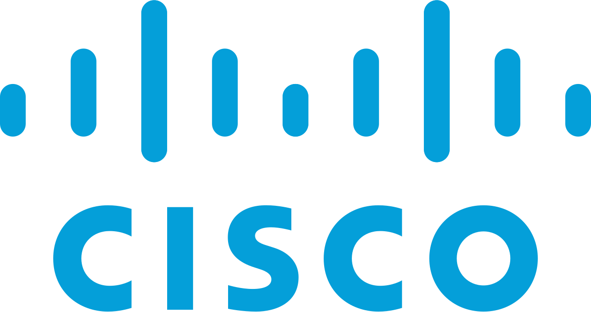

-- Riohe Tonka Online Resume --
Profile
A motivated Computer Engineering graduate with hands-on experience in IT support, back-office administration
and as B2B payment specialist. Skilled in working both independently andcollaboratively in small and large
team settings. I am Passionate about programming and data analysis, while serving a strong desire to contribute to
innovative projects.
I have successfully worked on various projects and now seeking an opportunity to apply my technical skills in a dynamic,
collaborative environment with like-minded professionals. Committed to creating seamless and impactful experiences
for end-users through continuous learning and development.
Education
Cape Peninsula University of Technology
- National Diploma in Computer Systems 2021
- Bachelor of Eng Technology in Computer Engineering 2023
- Bachelor of Eng Technology Honours in Computer Engineering 2024
Cisco Networking Academy

- Certificate: IT Essentials 2019
Alison Online Learning
- Diploma in python programming 2021
Work Experience
CPUT - End user IT support Technician
15th January 2020 - 31st March 2021
Duties and key responsibilities
- Attend and resolve calls received on logging systems.
- Stablish plan of action for effective and efficient usage of laboratory facilities.
- Perform research of equipment and technology to be implemented in the department.
- Manage IT related assets (computers, laptops, projectors and printers).
- Troubleshoot hardware and network connectivity and conduct software maintenance and installations on computers
- Configure computers to connect or communicate in a network.
- Demonstrate superior communication, time management, problem solving, and organization abilities.
- Ensure Health and Safety compliance according to OHSA.
LEAD CAPITAL GROUP - Back Office Administrator
November 2022 - May 2023
Key responsibilities
- Perform administrative duties including sending emails and resolving customer complaints or questions
- Maintaining a positive, empathetic, and professional attitude toward customers at all times.
- Responding promptly to customer or departmental inquiries.
- Acknowledging and resolving customer complaints.
- Processing transactions, forms, applications, and requests.
- Keeping records of customer interactions, transactions, comments, and complaints.
- Providing feedback on the efficiency of the customer service process. Demonstrate superior communication, time management, problem solving, and organization abilities.
- Managing a team of junior customer service representatives.
- Ensure customer satisfaction and provide professional customer support.
ENERLYTICS CC - B2B payment specialist
20th January 2025 - Present
Key responsibilities
- Conduct in-depth payment intelligence assessments through structured supplier engagements.
- Analyze supplier payment behaviors, transaction preferences, and friction points to identify patterns, gaps, and optimization opportunities within B2B payment ecosystems.
- Translate qualitative supplier interactions into quantifiable insights to support market analysis, product strategy, and B2B payment innovation initiatives.
Skills
Core Languages: Python, C, Java, JavaScript, C#(ongoing), MATLAB.
Web Development: HTML, CSS, JavaScrip, SQL
Python Ecosystem: NumPy, Pandas, OpenAI APIs, seaborn.
Networking & Protocols: Networking & Protocols:
OS: Windows, Linux, iOS, Linux Server Distributions, Cisco IOS.
APIs: Tested and validated REST APIs using postman.
Database Management Systems: MySQL, Oracle
IDEs: Eclipse, PyCharm, IntelliJ, Visual Studio, Sublime Text, Code Blocks, JCreator.
Engineering Skills: Embedded Software Design, System Integration, Performance Optimization
Microsoft Office:
Others: HTML and CSS, OpenFlow and SDN, Open Daylight controller.
Contact